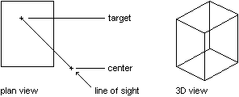

|
Target Property |
Specifies the target point for the view or viewport.
Signature
object.Target
object
PViewport, View, Viewport
The object this property applies to.
Target
Variant (three-element array of doubles); read-write
A 3D WCS coordinate representing the target point.
Remarks
The line of sight is drawn from the center to the target point.
 |
| Comments? |